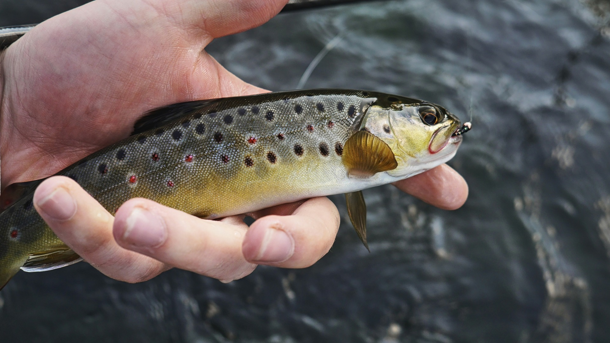
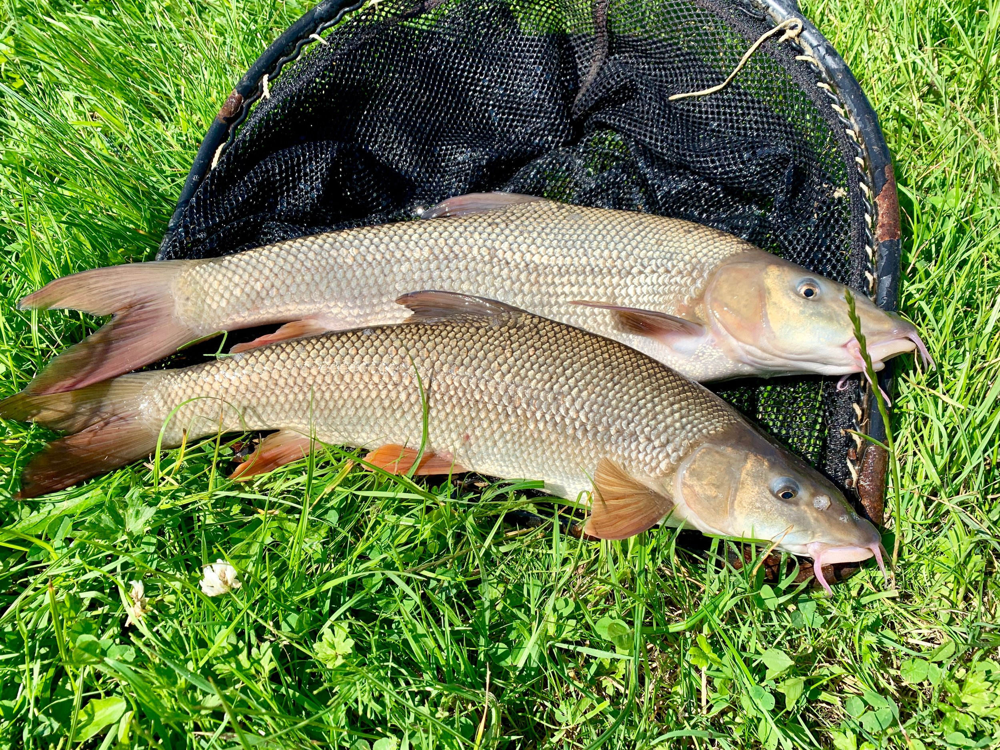
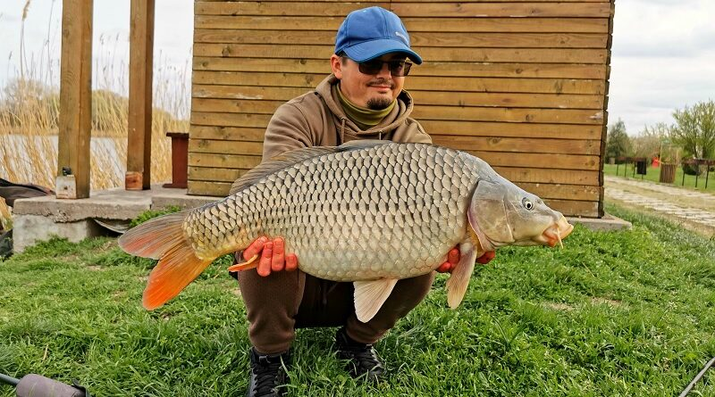
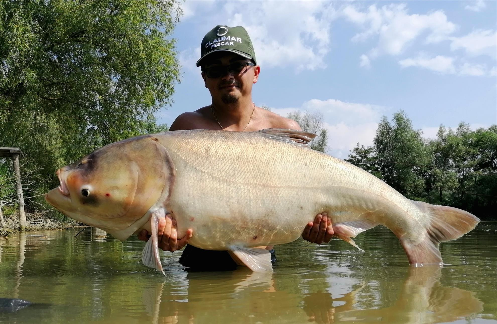
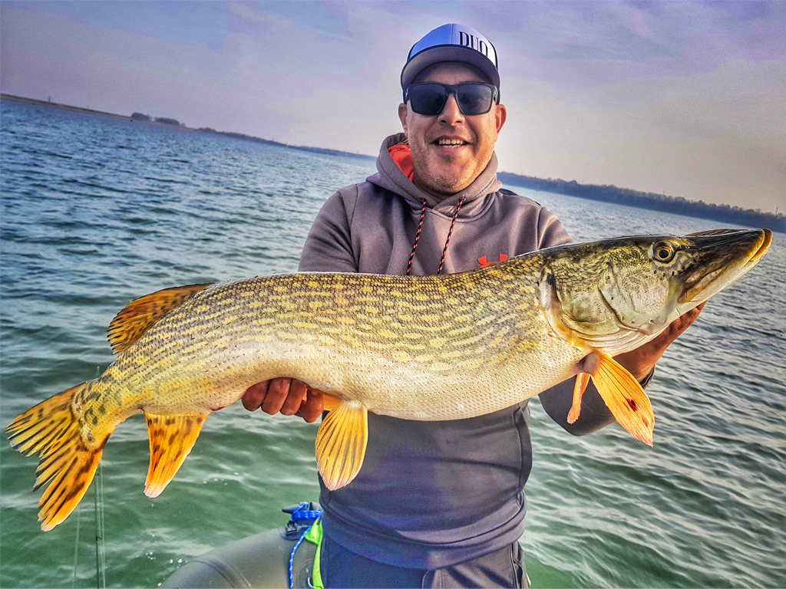

Speciile de pești din Romania
Peștii sunt animale vertebrate, în mare parte cu sânge rece, adaptate vieții acvatice, respirând prin branhii, având corp acoperit de solzi (de obicei) și propulsându-se cu înotătoare, fiind diversitatea cea mai mare de craniate, de la pești osoși la cartilaginoși, esențiali pentru ecosistemele acvatice și pentru om.
Clasificarea peștilor din România include specii răpitoare (Știucă, Somn, Salău, Biban, Avat) și pasnice (Crap, Caras, Platica), care trăiesc în diverse medii, de la râuri și paraie (Pastrav, Clean) la lacuri și Dunăre, cu unii (Crap, Caras) având regim mixt/vegetal, în timp ce alții (Știucă, Salău) preferă locuri cu mai multă vegetație, adaptându-se la toate apele dulce-stătătoare sau curgătoare, cum ar fi Dunărea și Marea Neagră, unde găsim și pești specifici.
1. Pești de Ape Reci (Munți/Dealuri - Pâraie, Râuri de munte, Afluenți)
-Pastrav Fântânel (Salvelinus fontinalis) - Indigen/Introdus.-rapitor: Specie introdusă (originară din America de Nord), se adaptează bine în apele reci și oxigenate de mare altitudine. Este un răpitor agresiv, decorat cu un model vermiculat (ca niște viermișori) pe spate și margini albe pe înotătoarele inferioare. -Pastrav Indigen (de Râu) (Salmo trutta fario).-rapitor: Este „regele” apelor de munte, o specie autohtonă extrem de precaută. Se hrănește cu insecte, dar exemplarele mari vânează activ pești mici și crustacee. Este recunoscut după punctele roșii și negre înconjurate de un halou deschis. -Pastrav Curcubeu (Oncorhynchus mykiss) - Introdus, comun în pescuit.-rapitor: Specie introdusă, foarte comună în crescătorii și râuri amenajate datorită creșterii rapide. Este un luptător spectaculos, hrănindu-se atât cu larve, cât și cu peștișori. Se recunoaște după banda roz-irizată de pe lateral. -Mreană de Râu (Barbus barbus) - Preferă curenți puternici, pietriș.-pasnic: Descriere: Un pește de forță care trăiește pe fundul apei, în curenți puternici. Se hrănește cu nevertebrate, melci și resturi organice pe care le caută scormonind substratul cu cele patru mustăți senzoriale. Este considerată unul dintre cei mai puternici luptători în undiță. -Scobar (Chondrostoma nasus) - Zone cu curent, pietriș/nisip.-pasnic: Un pește foarte activ care trăiește în cârduri numeroase. Are o gură particulară, sub formă de fantă transversală cu margini cornoase, cu care „rade” algele de pe pietrele din albiile râurilor. Este o specie pretențioasă și tehnică pentru pescari. Clean de Râu (Leuciscus cephalus) - Versatil, în orice râu.-rapitor: Deși face parte din familia ciprinidelor, cleanul este un răpitor versatil. Atacă orice, de la insecte și fructe căzute în apă, până la peștișori și broscuțe. Are un corp cilindric, solzi mari și o gură largă.
 2. Pești de Ape Stătătoare și Lente (Lacuri, Bălți, Râuri Mari)
Crap Comun (Cyprinus carpio) - Foarte comun, lacuri și râuri mari.-pasnic: Regele bălților și lacurilor, foarte apreciat de pescari. Este un pește robust, care se hrănește pe fundul apei cu nevertebrate, semințe și vegetație. Exemplarele mari pot fi foarte precaute. Caras de Aur/Argintiu (Carassius auratus/gibelio) - Bălți, lacuri, preferă ape cu mâl, se adaptează ușor.-pasnic: Extrem de adaptabil, se găsește în aproape orice baltă sau canal. Se hrănește cu mâl, alge și nevertebrate. Cunoscut pentru rezistența sa și capacitatea de a supraviețui în ape cu oxigen puțin. Platică (Roșioară de Râu) (Rutilus rutilus) - Râuri, lacuri, zone cu vegetație.-pasnic+rapitor: Un pește mic, cu solzi argintii și o pată roșiatică pe înotătoarele pectorale. Trăiește în cârduri numeroase, hrănindu-se cu alge, plancton și larve de insecte, în special în zonele cu vegetație. Babusca (Rutilus frisii) - Râuri mari, Dunăre, lacuri.-pasnic+rapitor: Similară cu Platica, dar în general atinge dimensiuni mai mari. Preferă râurile mari și Dunărea. Se hrănește predominant pe fundul apei cu organisme bentonice, dar și cu vegetație. Novac (Hypophthalmichthys molitrix) - Fitofag, lacuri, bălți, Delta.-pasnic: Un pește mare, adus din Asia, specializat în filtrarea fitoplanctonului din coloana de apă. Este esențial pentru menținerea curățeniei apei în lacurile unde este prezent. Este greu de prins la undiță clasică. Săbiță (Pelecus cultratus) - Dunăre, lacuri, zone cu stuf.-pasnic: Un pește pelagic cu un corp turtit lateral, care seamănă cu o lamă de sabie. Trăiește în bancuri, hrănindu-se cu plancton și ocazional cu alevini (puiet de pește). Se găsește adesea în Dunăre și în lacurile mari. Lin (Tinca tinca) - Bălți, lacuri cu mâl, vegetație.-pasnic: Un pește frumos, cu pielea acoperită de un mucus protector și solzi mici. Preferă apele stătătoare, cu mult mâl și vegetație deasă. Este un pește solitar, care se hrănește pe fundul apei. Gălbenuș/Ghiozdan (Gobio gobio) - Afluenți mici, râuri.-pasnic: Un pește mic, de fund, cu două mustăcioare scurte. Se găsește adesea în afluenții mici și râuri, pe substrat pietros sau nisipos. Se hrănește cu larve și viermișori. Știucă (Esox lucius) - Lacuri, bălți, zone cu stuf.-rapitor: Unul dintre cei mai cunoscuți răpitori, are un corp alungit, asemănător cu o săgeată, și o gură mare, plină de dinți ascuțiți. Stă la pândă în zonele cu vegetație și stuf, atacând fulgerător peștii mici care trec prin apropiere. Somn (Silur) (Silurus glanis) - Râuri mari, lacuri, Dunăre, preferă zone adânci.-rapitor: Cel mai mare pește răpitor din apele noastre. Are pielea netedă, fără solzi, și mustăți lungi. Preferă apele adânci, gropile din râu sau lacuri și vânează în special noaptea, hrănindu-se cu pești, broaște și chiar păsări acvatice.
  